Agentic infrastructure needs agentic observability
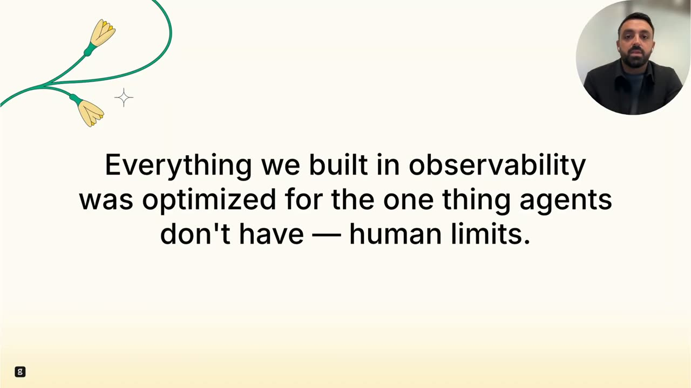
Official description
Observability pipelines were built for a world where engineers manually standardized logs, traces, and metrics. That model is breaking down as AI generates services and infrastructure faster than pipelines can keep up. Explore a new model where observability layers reason over telemetry and adapt as systems evolve. Agent-driven workflows continuously interpret and normalize data, raising new questions around guardrails, validation, and autonomy.
Summary
Overview
This session argues that traditional observability—logs, traces, dashboards, and alerts built for human investigators—is breaking down now that AI agents generate, operate, and debug software. Jimmy Herbert of groundcover frames it as a systems-level diagnosis rather than a product pitch, contending that observability must shift from human-readable summaries to complete-context, agent-driven analysis. He maps three structural failures and proposes a new architecture where the LLM orchestrates investigation while a deterministic backend handles analysis close to the data.
Key announcements
This session is a conceptual diagnosis rather than a product launch; no dated product announcements are present. The architectural positioning described:
- groundcover's complete-state model — Agents reason over full system state rather than a curated slice, reducing hallucinated diagnoses (~08:44).
- Bring Your Own Cloud (BYOC) — Telemetry stays inside the customer's own cloud for control, governance, and sensitive-data handling (~09:13).
- Zero instrumentation, zero friction — The observability layer instruments automatically because humans cannot keep instrumentation current in AI-generated systems (~09:25).
- "Move the LLM up; push the analysis down" — The model handles intent and investigation strategy while the backend does deterministic analytical work close to the data (~09:50).
Topics covered
- Why logs designed for discrete events fail against agent "reasoning trails" and decision breadcrumbs.
- Non-deterministic agent flows breaking head-based and tail-based sampling (e.g., 50,000 spans per session).
- Why a 200 OK status code is meaningless when infrastructure succeeds but the agent outcome is wrong.
- Telemetry volume explosion and the cost-versus-visibility trade-off in vendor ingestion economics.
- Telemetry now containing sensitive data—prompts, PII, financial and business logic—shifting cost discussions into liability discussions.
- Collapse of manual instrumentation under AI development velocity.
- Observability historically optimized for human cognitive limits rather than agent capabilities.
- Context quality mattering as much as or more than model quality.
- The limits of MCP-style external agents operating on partial context as "guests."
- Investigation starting from intent rather than dashboard navigation; agents returning answers and next actions.
- Autonomy, guardrails, validation, and accountability questions for self-remediating systems.
Notable quotes
"200 OK means nothing. In traditional systems, a successful status code usually meant the system behaved correctly. In agent systems, it only means nothing crashed." — Jimmy Herbert
"We're feeding agents a summary and expecting them to understand the entire book. That's not a model problem; it's a data completeness problem." — Jimmy Herbert
"AI can't fix what AI can't see. The agentic infrastructure needs agentic observability." — Jimmy Herbert
Products and tools mentioned
- groundcover
- Claude
- MCP (Model Context Protocol) [inferred]
- OpenTelemetry / APM tooling (head-based and tail-based sampling)
- CI/CD systems
Speakers featured
- Jimmy Herbert — Lead, Solutions Engineering team, groundcover
Frames
{kind=link}
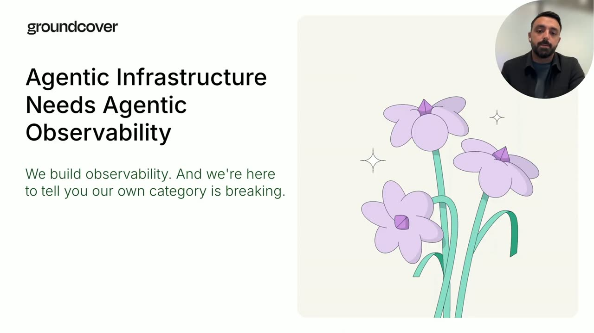
{kind=link}
{kind=link}
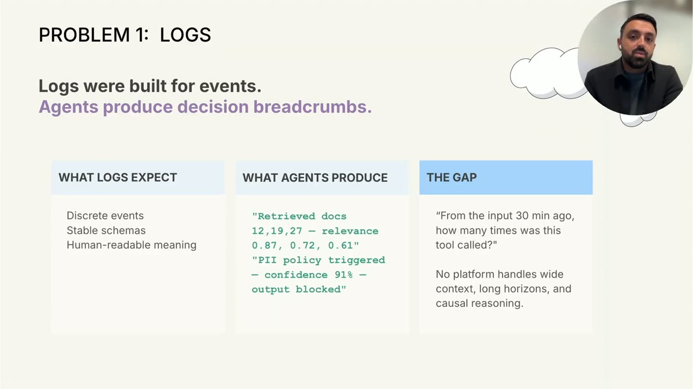
{kind=link}
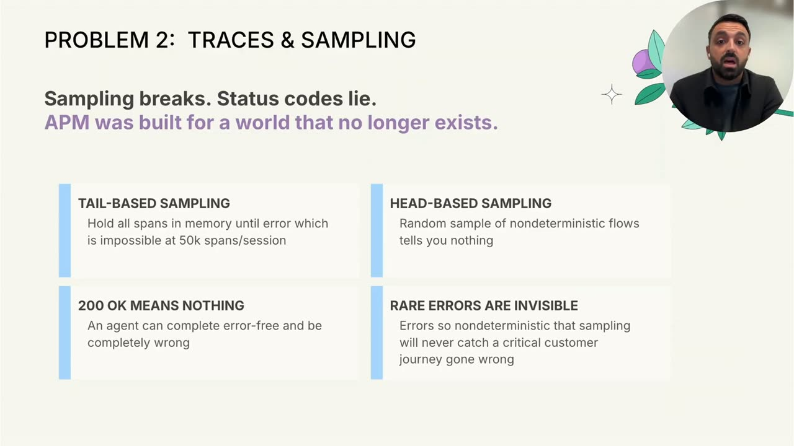
{kind=link}
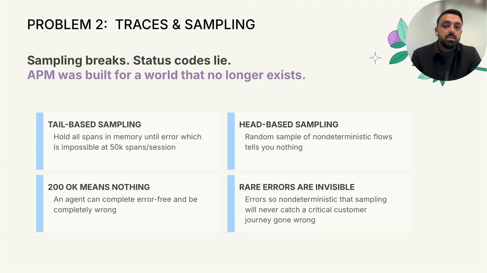
{kind=link}
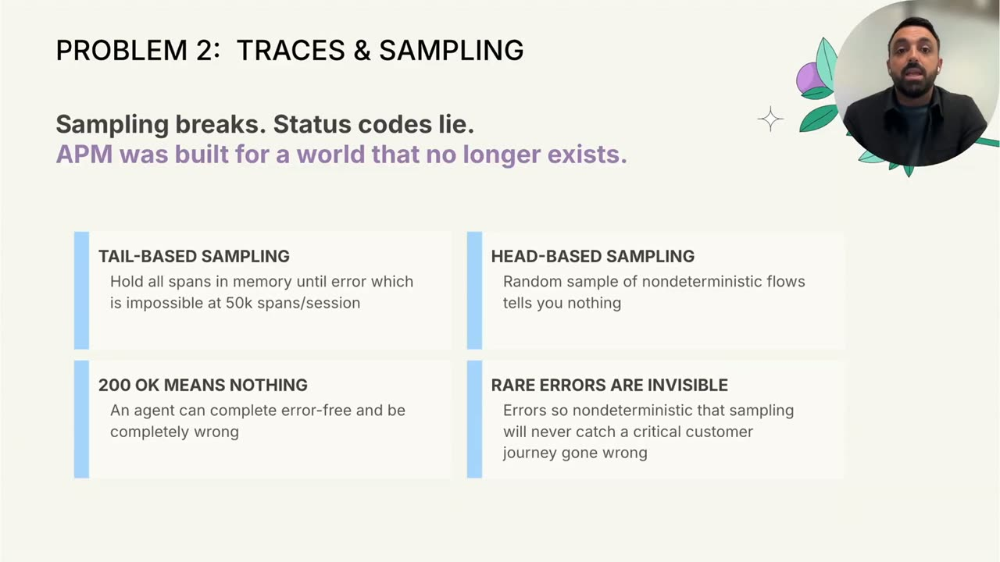
{kind=link}
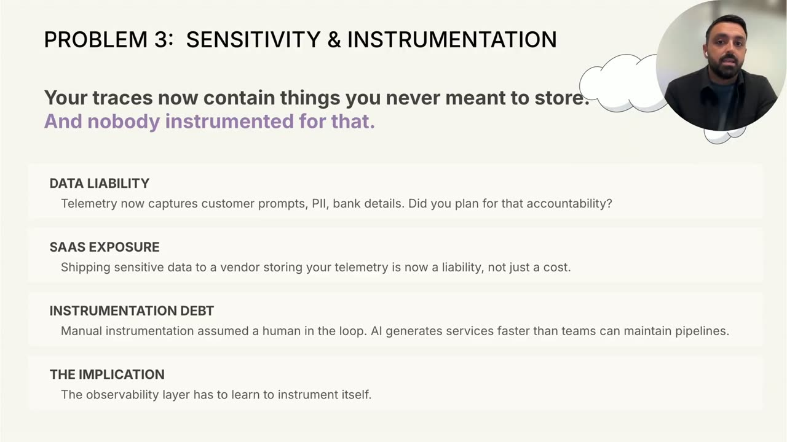
{kind=link}
{kind=link}
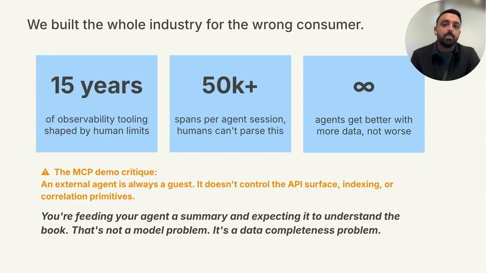
{kind=link}
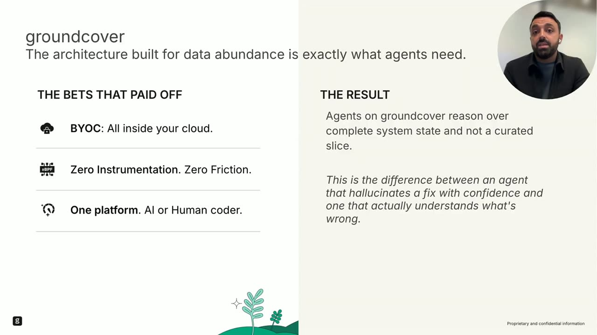
{kind=link}
{kind=link}
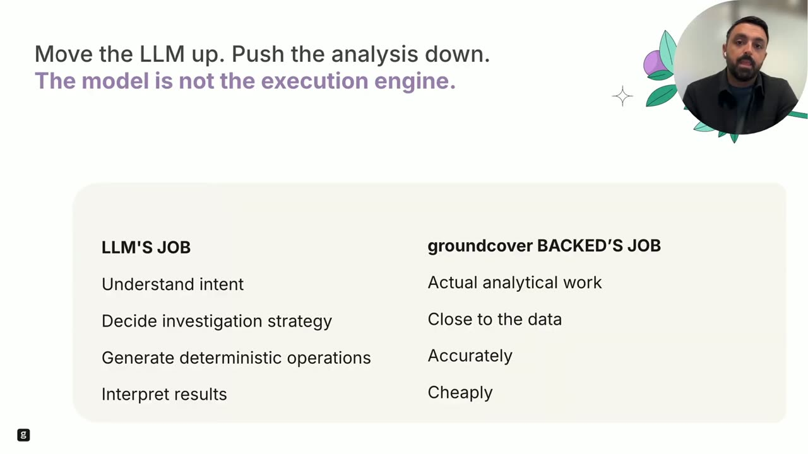
{kind=link}
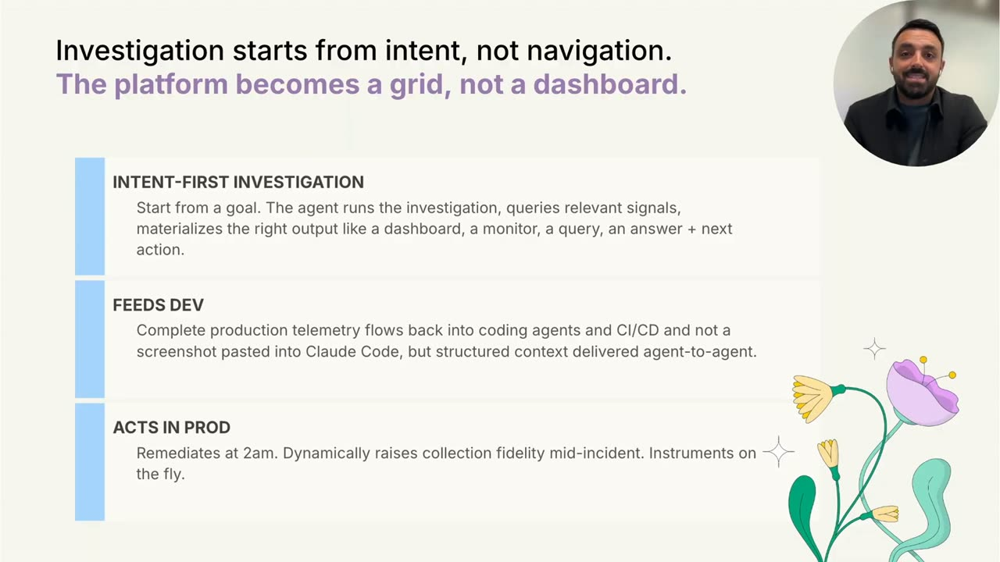
{kind=link}
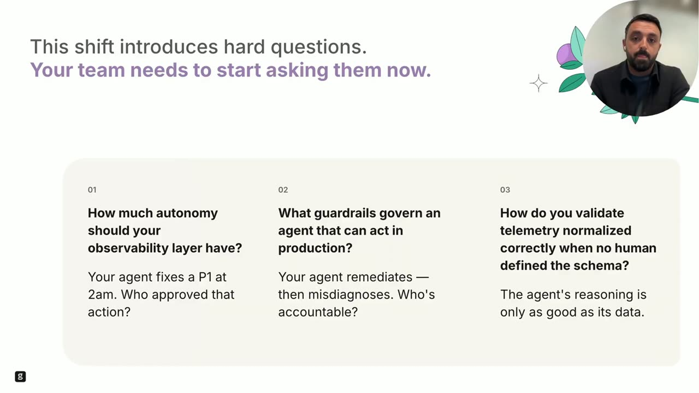
{kind=link}
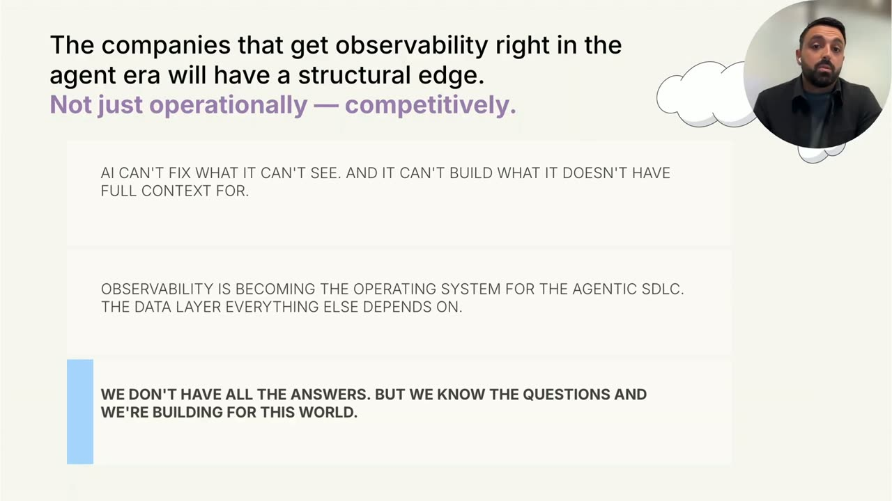
Frames around each announcement
Transcript
Show / hide transcript (15,392 chars)
[00:00:01] JIMMY HERBERT: Once upon a time, humans wrote software, [00:00:03] humans operated software, and humans debugged software. [00:00:08] Observability was built around this. [00:00:10] And I'm here to tell you that our own category is breaking. [00:00:14] Logs, traces, dashboards, alerts, [00:00:18] all of it assumed a human investigator sitting in front [00:00:21] of the data trying to figure out what happened. [00:00:25] But that world is changing. [00:00:27] Now agents are writing code, operating systems, [00:00:30] making decisions, debugging failures, [00:00:32] and increasingly interacting with infrastructure [00:00:35] without a human in the loop. [00:00:38] And, once the consumer of observability changes [00:00:40] from humans to agents, [00:00:42] the assumptions underneath the category start to fail. [00:00:46] That's the core idea I want to talk about today. [00:00:49] Agentic infrastructure needs agentic observability. [00:00:54] My name is Jimmy. [00:00:55] I lead the solutions engineering team here at groundcover. [00:00:58] And I want to share today [00:00:59] that it's actually not really a product pitch; [00:01:03] it's more of a diagnosis. [00:01:05] Something fundamental stopped working [00:01:07] in observability once AI systems became part [00:01:11] of the software lifecycle itself. [00:01:13] And this is not a feature problem. [00:01:16] It's not a "we need better dashboards [00:01:18] or more AI features" problem. [00:01:20] This is a systems problem. [00:01:23] The operating assumptions underneath observability [00:01:25] are changing. [00:01:28] The first problem is logs. [00:01:30] Logs were built for events. [00:01:33] Agents produce decision breadcrumbs. [00:01:36] Traditional logging assumes discrete events, stable schemas, [00:01:40] and human-readable meaning. [00:01:43] request started, request completed, database failed, [00:01:47] cache missed, those are events. [00:01:50] But agents don't behave like that. [00:01:53] An agent retrieves documents, scores relevance, [00:01:55] supplies policies, retries tool calls, [00:01:58] rewrites outputs, reevaluates context. [00:02:02] What gets produced is not an event stream; [00:02:05] it's a reasoning trail. [00:02:08] And that creates a completely different problem. [00:02:11] Now the question isn't just what happened. [00:02:14] The question becomes, why did the agent make this decision? [00:02:18] Why did it choose these documents? [00:02:20] Why did it block this output? [00:02:22] Why did it retry this tool five times? [00:02:26] The reasoning happens across long time horizons [00:02:29] and wide context windows. [00:02:31] And, honestly, no observability platform today was really [00:02:35] designed for this. [00:02:37] Traditional observability assumed systems were [00:02:40] mostly deterministic. [00:02:42] You could usually reconstruct the story afterward. [00:02:45] A request failed. [00:02:47] A dependency timed out. [00:02:49] A deployment introduced latency. [00:02:51] Agent systems don't fail that cleanly. [00:02:55] The same input can produce different behaviors. [00:02:58] The same workflow can make different decisions. [00:03:02] And, increasingly, understanding the reasoning path matters more [00:03:06] than understanding the infrastructure path. [00:03:11] The second problem is traces and sampling. [00:03:14] Sampling breaks and status codes lie. [00:03:18] APM was built for a world that no longer exists. [00:03:23] Let's start with head-based sampling. [00:03:26] A random sample [00:03:27] of a non-deterministic agent flow tells you almost nothing. [00:03:31] The one trace you keep may completely miss the reasoning [00:03:34] path that actually mattered. [00:03:37] Tail-based sampling isn't a real answer, either, [00:03:40] because now you're trying to hold tens of thousands of spans [00:03:43] in memory waiting to decide if something failed. [00:03:47] At 50,000 spans per session, that falls apart pretty quickly. [00:03:54] And then there's the bigger issue. [00:03:56] The 200 OK means absolutely nothing. [00:04:00] I'll say it again. [00:04:01] 200 OK means nothing. [00:04:04] In traditional systems, [00:04:06] a successful status code usually meant the system [00:04:08] behaved correctly. [00:04:10] In agent systems, it only means nothing crashed. [00:04:14] The infrastructure succeeded; [00:04:16] the outcome can still be completely wrong. [00:04:19] The agent may have used the wrong context, [00:04:22] selected the wrong tool, hallucinated an answer, [00:04:26] or misunderstood intent. [00:04:28] No answer does not mean correct anymore. [00:04:32] These failures are incredibly difficult to capture [00:04:35] because they're often rare and nondeterministic. [00:04:39] Sampling guarantees you missed the exact journey you needed [00:04:42] to debug. [00:04:44] And this changes the economics completely. [00:04:47] Historically, observability vendors made money [00:04:49] by charging you to ingest more telemetry. [00:04:52] That worked when telemetry growth was relatively [00:04:55] predictable, but agent systems explode telemetry volume. [00:04:59] One workflow can generate thousands of spans, [00:05:02] hundreds of tool calls, [00:05:04] and massive amounts of contextual data. [00:05:07] So now teams are forced into a bad trade-off: [00:05:10] either keep the data and absorb the cost, or reduce visibility [00:05:15] and hope the important signals survive. [00:05:18] Neither option really works. [00:05:27] The third problem, sensitivity and instrumentation. [00:05:31] Your telemetry now contains things you never meant to store: [00:05:36] prompts, customer conversations, PII, financial information, [00:05:41] internal business logic. [00:05:44] Telemetry stopped being just technical metadata. [00:05:47] Now it's potentially the most sensitive data in the company. [00:05:51] That changes the risk model completely. [00:05:55] Shipping all of that to a SaaS vendor is no longer just a [00:05:58] cost discussion. [00:05:59] It becomes a liability discussion. [00:06:02] And, at the same time, [00:06:04] manual instrumentation is collapsing under AI velocity. [00:06:08] Humans used to maintain Pipelines manually [00:06:11] because the systems evolved at human speed. [00:06:14] Now AI generates services and workflows faster [00:06:17] than teams can keep instrumentation current. [00:06:22] So the implications become pretty obvious. [00:06:25] The observability layer itself has to learn [00:06:27] to instrument automatically. [00:06:30] If you zoom out, all three [00:06:35] of these problems point to the same thing. [00:06:39] Everything we built in observability was optimized [00:06:42] for the one thing agents don't have: human limits. [00:06:47] We optimize for less data, simpler dashboards, [00:06:51] smaller cardinality, reduced telemetry, [00:06:55] human readable abstractions. [00:06:58] But agents don't need the same simplifications humans need. [00:07:02] Agents actually improve with more context, which means a lot [00:07:06] of the old optimizations become constraints. [00:07:14] This is why I say we built the whole industry [00:07:16] for the wrong consumer. [00:07:19] For 15 years, observability tooling was shaped [00:07:22] around human cognition. [00:07:24] Humans can't process 50,000 spans in a session. [00:07:28] Agents can. [00:07:30] Humans need summaries. [00:07:32] Agents need full context. [00:07:35] Humans simplify systems to understand them. [00:07:38] Agents often perform better [00:07:39] when they can access the entire system state. [00:07:43] So right now we're doing something fundamentally broken. [00:07:47] We're feeding agents a summary and expecting them [00:07:49] to understand the entire book. [00:07:52] That's not a model problem; it's a data completeness problem. [00:07:56] And, honestly, I think this is one [00:07:58] of the biggest misconceptions in AI infrastructure right now. [00:08:01] A lot of people assume better models automatically solve [00:08:05] observability, but smarter models operating [00:08:08] on the incomplete telemetry still make bad decisions. [00:08:12] Context quality matters just as much [00:08:15] as model quality, possibly more. [00:08:19] And this is where I'll make a slightly controversial point [00:08:22] about MCP style demos. [00:08:25] An external agent is always a guest. [00:08:28] It doesn't control the API surface. [00:08:30] It doesn't control indexing. [00:08:32] It doesn't control correlation primitives. [00:08:34] It operates on partial context, [00:08:36] and partial context is exactly what creates [00:08:39] hallucinated diagnosis. [00:08:44] What agents actually need is an architecture built [00:08:47] for data abundance, and this is where groundcover happens [00:08:50] to align very naturally with this shift. [00:08:53] Agents on groundcover reason [00:08:55] over complete system state, not a curated slice. [00:08:59] That's an important distinction [00:09:01] because there's a massive difference [00:09:02] between an agent confidently hallucinating a fix [00:09:05] and an agent actually understanding what's wrong. [00:09:10] A few architectural bets ended up mattering a lot here. [00:09:13] First, BYOC: Bring your own cloud. [00:09:17] Everything stays inside your cloud. [00:09:20] That matters for control, governance, [00:09:23] and sensitive telemetry. [00:09:25] Second, zero instrumentation and zero friction. [00:09:29] You cannot depend on humans [00:09:30] to manually keep instrumentation current in AI-generated systems. [00:09:36] And, third, one platform, [00:09:38] regardless of whether the code was written by a human [00:09:41] or an agent because, increasingly, it's both. [00:09:47] This leads to a new model for observability. [00:09:50] Move the LLM up; push the analysis down. [00:09:55] The model is not the execution engine. [00:09:58] The LLM's job is to understand intent, [00:10:00] decide investigation strategy, [00:10:03] and generate deterministic operations [00:10:05] and interpret the results. [00:10:08] The back end's job is the actual analytical work, [00:10:11] close to the data, accurately, cheaply. [00:10:16] That separation matters. [00:10:18] You don't want the model brute forcing analysis [00:10:20] over complete context. [00:10:22] You want the model orchestrating investigation [00:10:24] over a deterministic analytical system with complete telemetry. [00:10:30] That's a very different architecture [00:10:32] than what most observability systems were originally [00:10:34] designed for. [00:10:39] Once you accept that model investigation changes [00:10:41] completely, investigation starts from intent, not navigation. [00:10:47] In the old world, engineers clicked [00:10:49] through dashboards manually, [00:10:51] trying to piece together what happened. [00:10:53] In the new world, you start with a goal. [00:10:56] Why did this fail? [00:10:58] What changed? [00:10:59] Which customers were impacted? [00:11:02] The agent runs the investigation, [00:11:04] gathers the right signals, materializes the right outputs, [00:11:07] and returns an answer plus next actions. [00:11:11] Not a dashboard, an answer. [00:11:14] And this changes development workflows too. [00:11:17] Right now, teams literally screenshot dashboards [00:11:19] and paste them into Claude. [00:11:21] That should not exist. [00:11:23] Production telemetry should flow directly into coding agents [00:11:28] and CI/CD systems as structured context. [00:11:32] And, eventually, these systems don't just observe; [00:11:35] they start acting, raising collection fidelity dynamically, [00:11:40] instrumenting on the fly, [00:11:41] supporting the remediation during incidents. [00:11:44] And I think this is where the category starts [00:11:46] to look fundamentally different. [00:11:48] Observability stops being a passive debugging interface. [00:11:53] It becomes an active operational system, [00:11:56] not just showing humans what happened [00:11:58] but helping systems understand, respond, [00:12:01] and eventually recover automatically. [00:12:06] Now, obviously, this introduces hard questions. [00:12:09] And, honestly, I think the industry still underestimates [00:12:12] how important these questions are going to become. [00:12:16] How much autonomy should your observability layer [00:12:18] actually have? [00:12:20] If an agent fixes a production incident at two in the morning, [00:12:24] who approved that action? [00:12:26] What guardrails govern systems [00:12:28] that can act directly in production? [00:12:30] If the agent remediates incorrectly, [00:12:33] who owns that outcome? [00:12:35] And how do you validate telemetry normalized correctly [00:12:39] when no human explicitly defined the schema [00:12:42] because ultimately the agent's reasoning is only [00:12:45] as good as its data. [00:12:49] I'll say it again. [00:12:50] The agent's reasoning is only as good as its data. [00:12:53] These are not edge cases. [00:12:55] These are foundational operating questions [00:12:58] for the next generation of infrastructure systems. [00:13:05] My view is that the companies that get observability right [00:13:08] in the agent era will have a structural advantage, [00:13:12] not just operationally, competitively. [00:13:16] AI cannot fix what it cannot see, [00:13:20] and it cannot build effectively without full context. [00:13:24] We definitely do not have every answer yet, [00:13:27] but we know the direction that this is going. [00:13:29] And we know the questions teams need to start asking now. [00:13:33] Observability is becoming the operating system [00:13:37] for the agentic SDLC, the data layer everything else [00:13:40] depends on. [00:13:42] This is the shift happening underneath the industry [00:13:45] right now. [00:13:47] I'll leave you with the core idea one more time. [00:13:50] AI can't fix what AI can't see. [00:13:54] The agentic infrastructure needs agentic observability. [00:13:58] Thank you.